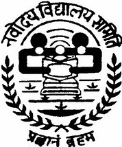

NCC B Certificate Holder
Earned the NCC B Certificate, reflecting discipline, commitment, teamwork, and active participation in structured training and leadership activities.
A book-style walkthrough of coding progress, learning wins, event management experience, hackathon organizing, and the chapters shaping my portfolio in Bangalore.
Earned the NCC B Certificate, reflecting discipline, commitment, teamwork, and active participation in structured training and leadership activities.
Worked as a Scout and Guide Rover, gaining experience in service, responsibility, collaboration, discipline, and community-focused activity.
Recognized as a Tata Scholar, marking an important academic and merit-based achievement in my student journey.

School RepresentationRepresented my school at the national level, a milestone that strengthened confidence, exposure, and the ability to perform beyond local competition.
Actively contributed to event management, helping with planning, coordination, and execution while improving leadership and teamwork.
Worked in hackathon organizing and event execution, building strong skills in coordination, communication, deadline handling, and smooth team collaboration.
The next target is to add stronger technical achievements to these existing leadership and academic milestones through projects, coding progress, and real-world impact.